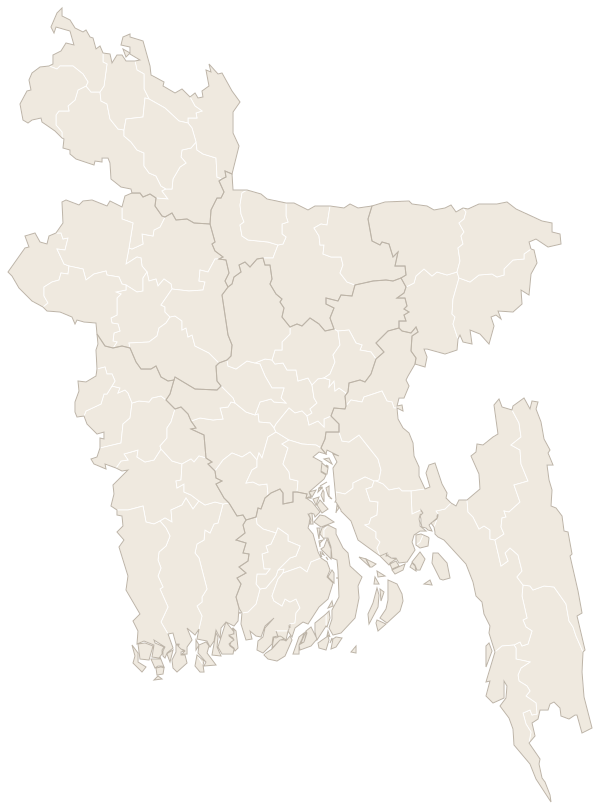

Saifullah Kamal, a 65-year-old homeopathic doctor in Chuadanga, has spent thousands of taka trying to make his dispensary bearable in the summer. Yet the most effective solution remains beyond his reach.
One ceiling fan could not cool the concrete-roofed room, so four years ago he bought an air cooler. Frequent power cuts made it hard to keep working, so he wants to add a rechargeable fan.
An air conditioner is still out of reach. "If I could afford ACs, I would definitely buy one," he says.
For banker Abul Bashar, 35, the calculation was different. Last year he bought a one-tonne air conditioner because his newborn could not cope with the heat.
Both men live in Chuadanga, one of Bangladesh's hottest districts, where temperatures reach around 43 degrees Celsius in April 2024.
Beyond the hottest districts, residents in the capital city are also facing the same problem. For instance, Mehedi Hasan, a private employee who lives in Dhaka, also installed a 1.5-tonne AC worth Tk 60,000 last year.
"The temperature in Dhaka is becoming unbearable. That’s why I decided to purchase an AC because the price is low and EMI is available," he said.
"The air-conditioner has given relief to my family, including two children, during summer."
Their choices offer a glimpse of an economic shift under way across the country. As heat changes how Bangladeshis live and work, demand is growing for products and services that promise relief, protect production and reduce climate risk. Businesses are finding opportunities in a crisis already taking a heavy toll on the economy.
The cost of a hotter country
Between 2010 and 2024, Bangladesh averaged 96 days a year with apparent temperatures above 35°C. The findings are based on an analysis by The Daily Star using Heat Index (HI) data compiled by the World Bank’s Climate Change Knowledge Portal and heat-related health data from the Lancet Countdown.
A nation turning red
Days a year that feel hotter than 35°C (heat index), by division
In the 1950s and early 60s, Khulna, the hottest division, had ~52 days a year that felt hotter than 35°C. Dhaka had ~40.
By the turn of the century the count had climbed everywhere: ~87 days in Khulna, ~73 in Dhaka.
In 2010–24 Khulna averaged ~124 such days a year and Dhaka ~109. Every division has more than doubled since the 1950s; Chattogram and Sylhet have four times as many.
2024 was the hottest year in the record: 144 days in Khulna, 137 in Barishal, 135 in Dhaka.
Play the years from 1950, or drag the slider. Tap a division for its number.
ERA5 reanalysis, World Bank Climate Change Knowledge Portal. Division figures count April to September.
View the data
| Division | 1950–64 | 1965–79 | 1980–94 | 1995–09 | 2010–24 |
|---|---|---|---|---|---|
| Barishal | 37 | 42 | 48 | 67 | 108 |
| Chattogram | 13 | 14 | 15 | 25 | 53 |
| Dhaka | 40 | 41 | 51 | 73 | 109 |
| Khulna | 52 | 58 | 66 | 87 | 124 |
| Mymensingh | 25 | 23 | 31 | 47 | 81 |
| Rajshahi | 46 | 47 | 58 | 82 | 112 |
| Rangpur | 25 | 27 | 38 | 56 | 86 |
| Sylhet | 16 | 16 | 21 | 34 | 65 |
Average days a year with a heat index above 35°C, April to September.
Bangladesh is among the countries most exposed to rising temperatures. According to a 2025 World Bank report, Bangladesh’s maximum temperature has increased by about 1.1° Celsius (about 2° Fahrenheit) since 1980, while the country’s “feels-like” temperature has risen by 4.5°C (8°F), significantly increasing heat stress on people and communities.
The report found that in 2024 alone, heat-related physical and mental health impacts contributed to an estimated loss of 250 million workdays, costing the economy as much as $1.78 billion, equivalent to about 0.4 percent of the country’s GDP then.
Bangladesh's nights are getting hotter
Nights a year that stay at or above 26°C, at weather stations with long records. Tap a station for its numbers.

The nights are heating too. At 18 weather stations with long, unbroken records, nights that never cool below 26°C rose from ~76 a year in the 1990s to ~104 in 2014–23. All 18 stations rose.
In Dhaka, ~102 hot nights a year in the 1990s became ~130. Nights that stay above 28°C went from ~13 to ~30.
Map: Daily Star analysis of BMD daily data. Station measurements, not a national average.
Hot nights near you
Choose a district to see its nearest weather station.
Nearest station, not your district. Daily Star analysis of BMD daily data.
All 64 districts
| District | Nearest station | km | Hot nights a year, 2018–23 | Change since 1991–2000 |
|---|---|---|---|---|
| Bagerhat | Mongla | ~34 | ~135 | +20 |
| Bandarban | Kutubdia | ~53 | ~77 | +30 |
| Barguna | Khepupara | ~20 | ~114 | +14 |
| Barishal | Barisal | ~8 | ~108 | +54 |
| Bhola | Bhola | ~39 | ~117 | +23 |
| Bogura | Bogra | ~3 | ~117 | +30 |
| Brahmanbaria | Comilla | ~59 | ~92 | +51 |
| Chandpur | Chandpur | ~8 | ~136 | +44 |
| Chapainababganj | Rajshahi | ~50 | ~116 | +32 |
| Chattogram | Chittagong | ~10 | ~107 | +36 (since 1995–2000) |
| Chuadanga | Chuadanga | ~5 | ~112 | +17 |
| Cox's Bazar | Cox's Bazar | ~11 | ~79 | +31 |
| Cumilla | Comilla | ~16 | ~92 | +51 |
| Dhaka | Dhaka | ~13 | ~132 | +27 |
| Dinajpur | Dinajpur | ~10 | ~91 | +21 |
| Faridpur | Faridpur | ~14 | ~109 | +44 |
| Feni | Feni | ~4 | ~76 | +32 |
| Gaibandha | Bogra | ~52 | ~117 | +30 |
| Gazipur | Dhaka | ~36 | ~132 | +27 |
| Gopalganj | Gopalgonj | ~13 | ~110 | Record too short or broken to compare |
| Habiganj | Srimangal | ~32 | ~50 | Record too short or broken to compare |
| Jamalpur | Bogra | ~50 | ~117 | +30 |
| Jashore | Jessore | ~11 | ~117 | +32 |
| Jhalokati | Barisal | ~28 | ~108 | +54 |
| Jhenaidah | Chuadanga | ~33 | ~112 | +17 |
| Joypurhat | Badalgachhi | ~20 | ~98 | Record too short or broken to compare |
| Khagrachhari | Feni | ~57 | ~76 | +32 |
| Khulna | Mongla | ~18 | ~135 | +20 |
| Kishoreganj | Natrakona | ~60 | ~92 | Record too short or broken to compare |
| Kurigram | Rajarhat | ~15 | ~73 | Record too short or broken to compare |
| Kushtia | Kumarkhali | ~21 | ~113 (5 of 6 years) | Record too short or broken to compare |
| Lakshmipur | M.court | ~25 | ~120 | +27 |
| Lalmonirhat | Dimla | ~28 | ~80 | Record too short or broken to compare |
| Madaripur | Madaripur | ~7 | ~103 | +5 |
| Magura | Jessore | ~40 | ~117 | +32 |
| Manikganj | Faridpur | ~29 | ~109 | +44 |
| Meherpur | Chuadanga | ~19 | ~112 | +17 |
| Moulvibazar | Srimangal | ~27 | ~50 | Record too short or broken to compare |
| Munshiganj | Dhaka | ~28 | ~132 | +27 |
| Mymensingh | Mymensingh | ~2 | ~109 | +36 |
| Naogaon | Badalgachhi | ~21 | ~98 | Record too short or broken to compare |
| Narail | Gopalgonj | ~28 | ~110 | Record too short or broken to compare |
| Narayanganj | Dhaka | ~21 | ~132 | +27 |
| Narsingdi | Dhaka | ~48 | ~132 | +27 |
| Natore | Ishurdi | ~26 | ~110 | +26 |
| Netrakona | Natrakona | ~11 | ~92 | Record too short or broken to compare |
| Nilphamari | Dimla | ~17 | ~80 | Record too short or broken to compare |
| Noakhali | M.court | ~18 | ~120 | +27 |
| Pabna | Kumarkhali | ~28 | ~113 (5 of 6 years) | Record too short or broken to compare |
| Panchagarh | Tetulia | ~7 | ~48 (2 of 6 years) | Record too short or broken to compare |
| Patuakhali | Patuakhali | ~14 | ~122 | +26 |
| Pirojpur | Patuakhali | ~41 | ~122 | +26 |
| Rajbari | Faridpur | ~33 | ~109 | +44 |
| Rajshahi | Rajshahi | ~11 | ~116 | +32 |
| Rangamati | Rangamati | ~34 | ~33 | +9 |
| Rangpur | Rangpur | ~9 | ~92 | +25 |
| Satkhira | Satkhira | ~38 | ~136 | +39 |
| Shariatpur | Madaripur | ~25 | ~103 | +5 |
| Sherpur | Mymensingh | ~55 | ~109 | +36 |
| Sirajganj | Tarash | ~25 | ~114 | Record too short or broken to compare |
| Sunamganj | Sylhet | ~55 | ~58 | +21 (since 1993–2000) |
| Sylhet | Sylhet | ~11 | ~58 | +21 (since 1993–2000) |
| Tangail | Tangail | ~14 | ~78 | −2 (since 1994–2000) |
| Thakurgaon | Tetulia | ~47 | ~48 (2 of 6 years) | Record too short or broken to compare |
Extreme heat cuts labour productivity, increases illness and operating costs, strains agriculture and raises household spending.
Muhammad Abul Kalam Mallik, meteorologist of the Bangladesh Meteorological Department, said the difference between daytime and nighttime temperatures had narrowed, while the duration and frequency of temperatures between 32 and 35 degrees Celsius had increased.
“The heat that was previously prevalent in April and May is no longer confined to those months. It has now extended into June, July, August and September,” he said.
Heat now lasts into the monsoon
Days at or above 36°C per station, by month: 1991–2000 and 2014–23
View the data
| Month | 1991–2000 | 2014–23 |
|---|---|---|
| Jan | 0.0 | 0.0 |
| Feb | 0.0 | 0.0 |
| Mar | 1.8 | 1.7 |
| Apr | 5.8 | 6.8 |
| May | 4.0 | 5.5 |
| Jun | 1.3 | 3.2 |
| Jul | 0.1 | 1.3 |
| Aug | 0.2 | 1.0 |
| Sep | 0.3 | 1.2 |
| Oct | 0.1 | 0.3 |
| Nov | 0.0 | 0.0 |
| Dec | 0.0 | 0.0 |
Daily Star analysis of BMD daily data, 18 stations with a long, unbroken record. June to September went from ~13% of the year's 36°C days to ~32%.
He said the timing of seasonal onset and withdrawal had changed, disrupting the characteristics of Bangladesh’s traditional six seasons.
“Heatwaves, which were once largely associated with March and April, have increasingly extended into the monsoon season in recent years,” he said.
Mallick also pointed to rising surface temperatures and the emergence of urban heat islands in new locations as signs of changing weather and climate patterns.
The impacts are being felt across agriculture, fisheries, livestock, public health and industry, making long-term planning essential, he said.
For a labour-intensive economy, these impacts threaten competitiveness and growth, making heat adaptation an economic necessity while creating a market for cooling and other climate-resilient solutions.
Heat adaptation is therefore becoming an economic necessity, not simply an environmental concern. But the same pressure is creating a market for solutions.
Cooling: the most visible market
The expansion of Bangladesh’s cooling market is one of the clearest signs of how rising temperatures are reshaping consumer demand. However, market players and analysts say climate change is not the only driver. Rising incomes and purchasing power, urbanisation and changing consumer behaviour have also contributed to the market’s growth.
The market is expanding beyond affluent households, with air conditioners and other cooling appliances increasingly becoming part of middle-income households’ consumption.
According to industry estimates, the residential air-conditioner market alone generates around Tk 4,000 crore annually, equivalent to approximately $325–330 million.
Including commercial air conditioning, the broader AC market is estimated at around Tk 5,000 crore, or approximately $410 million.
Bangladesh’s annual AC demand was much smaller in the mid-2000s. A historical industry study estimated demand at around 50,000 units in 2005. Subsequent reports put annual sales at approximately 75,000 units in 2007 and 100,000 in 2008.
By 2024, annual sales had climbed to an estimated 650,000 units. However, the market remains highly sensitive to weather conditions. Published estimates put sales at around 400,000–450,000 units in 2025, following relatively milder temperatures and frequent rainfall.
A boom that tracks the weather
Air conditioners sold a year, industry estimates. = 50,000 units
- 2005~50,000
- 2007~75,000
- 2008~100,000
- 2020~300,000~90 days above 35°C
- 2023~450,000~103 days above 35°C
- 2024~650,000~115 days above 35°C“the hot 2024 season”
- 2025~400,000“milder temperatures and frequent rainfall”
Industry estimates; 2020, 2023 and 2025 are approximate (2023 and 2025 show the lower end of the estimated range). Days above 35°C are the division average of days a year that feel hotter than 35°C (heat index), April to September, World Bank CCKP.
The market for air coolers, conventional fans and rechargeable fans is more fragmented, with no sufficiently reliable consolidated valuation, said Tanvir Rahman.
According to 6Wresearch, Bangladesh’s air-conditioner market is projected to grow at a compound annual growth rate (CAGR) of 7.3 percent between 2025 and 2031.
A more optimistic projection from The Report Qube puts the market’s CAGR at around 12.3 percent between 2026 and 2034. It estimates the market at $480.22 million in 2026, rising to $890.21 million by 2034.
Urbanisation is another factor driving demand. More than 38 percent of Bangladesh’s population now lives in urban areas, while rapid residential and commercial expansion in Dhaka and Chattogram has increased demand for room air conditioners, particularly inverter-based models that promise greater energy efficiency and lower electricity bills.
The growth of middle-income households and rising purchasing power have also widened the consumer base for cooling appliances.
At the same time, investment by domestic and international manufacturers is reshaping the competitive landscape. Companies are increasingly localising production to reduce costs, improve supply-chain efficiency and expand their market presence.
Local manufacturing has helped reduce product prices by an estimated 12-18 percent compared with imported units, while industrial incentives and favourable duty structures for components have encouraged further investment.
These developments are also creating opportunities for innovation in energy-efficient appliances, environmentally friendly refrigerants and smart cooling technologies.
The expansion is reflected in household ownership data. According to Bangladesh Bureau of Statistics (BBS) figures cited in Bangladesh Sample Vital Statistics (BSVS) reports, the share of households using air conditioners rose to 2.28 percent from just 1.6 percent in 2021 highlighting the rapid spread of cooling appliances as household incomes have increased.
Cooling industry’s component bill hits Tk 5,765 crore as volume quadruples in 13 years
Bangladesh’s appetite for the major components that go into cooling products, such as compressors, copper tubes, aluminium parts, steel sheets, electronics and refrigerants, has grown sharply over the past decade and a half.
In 2012 the country handled about 25,500 tonnes of these components, assessed at Tk 678 crore. By 2025 the volume had more than quadrupled to about 106,600 tonnes, and the assessed value had jumped more than eightfold to Tk 5,765 crore.
As of October, the 2026 figures stood at 98,800 tonnes and Tk 5,140 crore, already close to last year’s totals.
The bill grew faster than the volume
AC manufacturing inputs, index 2012 = 100: weight and assessed value
Component bill: customs data for 38 HS codes of AC manufacturing inputs (not finished ACs); assessed value, nominal Tk. Calendar years; 2026 is January to October.
View the import data
| Year | Tonnes | Tk crore | Weight index | Value index |
|---|---|---|---|---|
| 2012 | 25,476 | 678 | 100 | 100 |
| 2013 | 26,823 | 717 | 105 | 106 |
| 2014 | 29,635 | 877 | 116 | 129 |
| 2015 | 35,780 | 872 | 140 | 129 |
| 2016 | 58,167 | 1,375 | 228 | 203 |
| 2017 | 69,867 | 1,964 | 274 | 290 |
| 2018 | 69,578 | 2,222 | 273 | 328 |
| 2019 | 101,824 | 2,782 | 400 | 410 |
| 2020 | 71,079 | 2,163 | 279 | 319 |
| 2021 | 92,409 | 3,213 | 363 | 474 |
| 2022 | 101,174 | 3,950 | 397 | 583 |
| 2023 | 98,840 | 5,084 | 388 | 750 |
| 2024 | 115,521 | 5,625 | 453 | 830 |
| 2025 | 106,640 | 5,765 | 419 | 851 |
| 2026 (Jan–Oct) | 98,782 | 5,140 | 388 | 758 |
Cooling market expands as heat, incomes drive demand
Tanvir Rahman, chief executive officer of Walton Air Conditioner, said Bangladesh's cooling market was expanding on the back of rising temperatures, economic development, technological progress and changing consumer expectations.
“Higher daytime temperatures, warm nights, and extended periods of heat increase the need for comfortable indoor environments. Customers are also becoming more proactive about buying ACs before the peak summer season,” he said.
However, he cautioned against attributing the market's growth to climate change alone, saying incomes, urbanisation, product affordability and consumer confidence also played important roles.
“Climate change is a structural long-term growth driver, while actual annual sales are determined by the interaction of weather, purchasing power, affordability, and consumer confidence,” he said.
Rahman said district towns and semi-urban areas were becoming increasingly important markets as rising purchasing power, wider product availability and improved distribution networks brought cooling appliances within reach of more households.
“The next stage of market expansion will increasingly depend on reaching consumers outside the largest urban centres,” he said.
On the market outlook, he said AC penetration remained relatively low compared with the country's population and number of households, leaving considerable room for growth.
“Ultimately, Bangladesh has the potential to develop into a significant regional manufacturing hub for cooling appliances. The opportunity extends beyond domestic sales to exports, commercial HVAC solutions, and environmentally responsible cooling technologies,” he added.
The local manufacturing revolution
Bangladesh’s AC market has shifted from heavy import dependence to domestic manufacturing and assembly, which now meet an estimated 75-80 percent of demand, according to industry insiders.
Local production has helped manufacturers offer competitive prices, shorten delivery times and expand installation, maintenance and spare-parts services. The growing industrial ecosystem has also created jobs and opportunities for technology transfer.
While the market once relied heavily on imported brands, local manufacturer Walton now holds more than 22 percent of the market, according to industry estimates. Gree, Haier, Samsung, MyOne, Unitech, Transcom Digital, Vision, Jamuna and Butterfly are also active in local manufacturing or assembly. Imports now account for an estimated 20–25% of AC demand.
Tanvir Rahman, chief business officer of Walton Air Conditioner, said local manufacturers have reached a stage where they can compete with international brands in terms of product quality and technology.
He added that domestic production enables companies to tailor products to Bangladesh’s climate and consumer needs while providing stronger after-sales service.
Drivers of demand
“Higher daytime temperatures, warm nights and extended periods of heat increase the need for comfortable indoor environments. Customers are also becoming more proactive about buying ACs before the peak summer season,” said Tanvir Rahman, [designation] of Walton.
He named four other drivers. “More families can now afford products that were previously considered luxury purchases,” he said of rising incomes. On urbanisation, he said, “Apartment living, dense urban development, commercial buildings and limited natural ventilation are increasing the need for mechanical cooling.” On local production, he said, “Domestic production has made products more accessible by reducing reliance on finished-product imports and improving availability.” And on technology and financing, “Inverter technology, improved efficiency, flexible instalments and promotional offers help consumers manage both upfront costs and electricity bills.”
Climate change and sales
“It would not be scientifically sound to assign a specific percentage of sales growth to climate change alone. Bangladesh does not have a publicly established decomposition of AC sales growth by temperature, income, urbanisation and price,” he said.
Pointing to the past two years, he said, “Sales rose strongly during the hot 2024 season, then fell substantially in 2025 when milder temperatures and frequent rainfall weakened demand.”
“Climate change is a structural long-term growth driver, while actual annual sales are determined by the interaction of weather, purchasing power, affordability and consumer confidence. This distinction is important for manufacturers when planning production, inventory, marketing and investment.”
Load-shedding and rechargeable fans
The hotter the night, the deeper the cuts
1 January to 9 November 2026. Above: night temperature. Below: daily average shortfall, in megawatts (MW) of demand the grid could not supply.
3,757 MW
January to March: cool nights, and almost no load-shedding.
Late April brought the year's hottest days. On 16 days the grid fell more than 1,000 MW short at its worst hour.
August had the hottest nights of the year, and the heaviest cuts: more than 1,000 MW short on 29 of 31 days. On 10 August the shortfall reached 3,757 MW.
Across the year, on nights cooler than 20°C the grid was short by ~41 MW on average. On nights above 26°C, ~1,120 MW.
Daily Star analysis of Power Grid Bangladesh hourly data. Night temperature: ERA5 reanalysis via Open-Meteo, mean of nine cities. Load-shedding tracks heat but also depends on fuel supply and plant outages, which this data cannot separate.
View the monthly data
| 2026 | Night °C | Avg MW | Worst hour MW | Days over 1,000 MW |
|---|---|---|---|---|
| Jan | 13.2 | 77 | 1,108 | 2 |
| Feb | 15.7 | 13 | 470 | 0 |
| Mar | 20.3 | 36 | 499 | 0 |
| Apr | 23.1 | 697 | 2,754 | 16 |
| May | 23.9 | 94 | 1,403 | 2 |
| Jun | 25.6 | 745 | 3,431 | 16 |
| Jul | 25.8 | 463 | 2,556 | 10 |
| Aug | 26.1 | 1,563 | 3,757 | 29 |
| Sep | 25.8 | 1,145 | 3,557 | 26 |
| Oct | 24.4 | 540 | 3,458 | 18 |
| Nov (1–9) | 23.5 | 32 | 791 | 0 |
The power goes when people sleep
Average shortfall by hour of the day, June to September 2026: megawatts of demand the grid could not supply.
Daily Star analysis of Power Grid Bangladesh hourly data. Midnight to 4am in red.
View the data
Average megawatts short, by hour: 12am 1,536; 1am 1,484; 2am 1,434; 3am 1,331; 4am 1,167; 5am 1,046; 6am 827; 7am 706; 8am 644; 9am 626; 10am 587; 11am 611; 12pm 884; 1pm 894; 2pm 895; 3pm 1,179; 4pm 1,030; 5pm 890; 6pm 691; 7pm 1,000; 8pm 949; 9pm 1,047; 10pm 914; 11pm 1,083.
“For households that cannot afford an AC, or cannot operate one reliably during power interruptions, rechargeable fans provide an accessible alternative,” he said.
He said traders reported sharp rises in rechargeable-fan sales during the 2024 heatwave. One Chattogram retailer sold 70–80 a day, against about 20–30 a day during Ramadan. “This is a retailer-level example rather than a national market estimate,” he said.
Who sits in the dark: Mymensingh and Sylhet bear the most
Share of demand not served, June to September 2026, by power-distribution zone.
Daily Star analysis of BPDB zone data. These are the nine BPDB distribution zones, not administrative divisions: Comilla is a zone of its own.
View the data
Share of demand not served, by zone: Mymensingh 19.8%; Sylhet 12.0%; Comilla 7.6%; Rangpur 7.3%; Khulna 7.0%; Barisal 6.5%; Rajshahi 6.0%; Dhaka 3.6%; Chittagong 2.9%.
A heavier year than the last two
Average shortfall by month, January to October: megawatts of demand the grid could not supply.
In 2026 the grid fell more than 2,000 MW short at its worst hour on 73 days between 1 January and 9 November, against 8 days in 2024 and 1 in 2025.
Daily Star analysis of Power Grid Bangladesh hourly data.
View the data
| Month | 2024 | 2025 | 2026 |
|---|---|---|---|
| Jan | 35 | 15 | 77 |
| Feb | 57 | 34 | 13 |
| Mar | 101 | 17 | 36 |
| Apr | 678 | 75 | 697 |
| May | 202 | 83 | 94 |
| Jun | 373 | 19 | 745 |
| Jul | 454 | 45 | 463 |
| Aug | 267 | 14 | 1,564 |
| Sep | 598 | 154 | 1,144 |
| Oct | 214 | 80 | 541 |
District towns and rural areas
“District towns and semi-urban areas are becoming increasingly important growth markets for cooling appliances. Dhaka and other major cities continue to have substantial demand, but the next stage of market expansion will increasingly depend on reaching consumers outside the largest urban centres,” he said.
“The opportunity outside major cities is significant, but companies should not assume that rural sales are growing faster everywhere. Actual growth depends on local incomes, reliable electricity, housing conditions, service availability and affordability.”
“The objective is not merely to sell more units; it is to build long-term customer confidence and make reliable cooling accessible to more Bangladeshi households.”
Outlook
“Bangladesh’s cooling market has considerable long-term growth potential. AC penetration remains relatively low compared with the size of the population and the number of households, leaving significant room for expansion,” he said.
Mesbah Uddin Ahmed, chief marketing officer of Fair Group, said production-level VAT incentives encouraged many local companies to enter AC manufacturing. Fair Electronics has established a factory in Narsingdi to manufacture Samsung and Hisense air-conditioners.
He said rising temperatures linked to climate change were increasing demand for cooling systems, while the expansion of the middle class and more affordable prices were further driving market growth.
The opportunity extends well beyond air conditioners. Fans, air coolers, rechargeable appliances, batteries, servicing, and spare parts serve consumers at every income level.
Green buildings: cooling that doesn't depend on a purchase
Amid rising temperatures and a focus on reducing energy costs, factories are investing in green buildings, creating a billion-dollar market for energy-efficient machinery, interior design, and renewable energy.
According to the Bangladesh Garment Manufacturers and Exporters Association (BGMEA), Bangladesh has 290 LEED (Leadership in Energy and Environmental Design)-certified RMG factories—including 125 platinum-rated, 145 gold-rated, and 16 silver-rated.
The country also holds 53 of the world’s top 100 highest-scoring LEED-certified factories.
Climate-smart investment potential of Bangladesh will be about $172 billion between 2018 and 2030, according to an estimate of the International Finance Corporation (IFC).
The investment will be mainly in green buildings, transportation infrastructure, urban water, agriculture, waste management, and renewable energy, to meet the nationally determined contribution (NDC) targets, the member of the World Bank Group said.
Green buildings can combine efficient cooling, insulation, reflective roofs, better ventilation and efficient lighting to cut energy use and improve indoor conditions.
Mohiuddin Rubel, founder and CEO of Bangladesh Apparel Voice, said extreme heat was becoming a business risk for Bangladesh’s garment industry, affecting workers’ health, productivity and factory operating costs.
He said factories were increasingly having to invest in cooling, ventilation, drinking water and worker welfare to maintain production during the summer months.
Rubel said targeted, low-cost cooling interventions could help workers cope with heat and recover some of the productivity lost to thermal stress, without requiring factories to cool entire production floors.
He said global apparel brands should share the cost of climate adaptation through realistic pricing, long-term sourcing commitments and investment in climate-resilient production.
Rubel also stressed that workers’ heat resilience depended not only on factory conditions but also on their living environments, including reliable electricity, access to clean water and adequate housing.
Why are entrepreneurs adopting green factories
Climate change is taking an increasing toll on Bangladesh’s health and economy, with heat exposure alone causing an estimated loss of $17.5 billion in potential earnings in 2025, according to the 2026 Lancet Countdown Report on Health and Climate Change.
Heatwave exposure among infants and elderly has more than doubled compared to the 1986-2005 period, while man-made fine particulate matter (PM) air pollution was responsible for an estimated 239,000 deaths in 2023.
As rising temperatures threaten workers’ well-being and productivity, Bangladeshi businesses are increasingly investing in sustainable buildings and heat-management technologies.
Rahi Aftab, assistant general manager and head of marketing at real estate developer Shanta Holdings Ltd, said corporate clients were placing greater emphasis on sustainability.
“Our vision behind constructing green buildings was driven by two key factors — the brand’s commitment and attitude towards sustainability. From the very beginning, our goal has been to set standards in construction by caring for the environment,” he said.
Shanta Holdings built Shanta Pinnacle, described as the country’s first 40-storey LEED Platinum-certified commercial skyscraper, reflecting its commitment to environmentally responsible construction.
For factories, managing heat requires targeted investments in roofing, insulation and ventilation. Md Fazlul Hoque, managing director of LEED Platinum-certified Plummy Fashions, said his company imported special steel from Japan that reflects sunlight rather than absorbing heat, at a cost 30–40% higher than ordinary steel.
“If this type of roofing material can be made affordable, there is a substantial potential market. Apart from industries, millions of tin-roofed houses in rural areas could also become much more comfortable,” he said.
Hoque said such investments could improve workers’ comfort and productivity without adding significantly to factory construction costs.
“If you provide workers with a comfortable environment, their productivity will improve. Even under normal conditions, if they are more comfortable, the quality of their work can improve,” he said.
He also cautioned against relying solely on air-conditioning because of its environmental implications.
“Air-conditioning has negative environmental implications because it requires electricity, which may be generated from fossil fuels,” he said.
Green buildings use energy-efficient heating, ventilation and air-conditioning systems, double-glazed facades, smart lighting, rooftop solar panels and water-recycling systems to reduce resource consumption. Heat-reduction measures include reflective roof coatings, insulation, solar-control glass, external shading and industrial fans.
These technologies could open opportunities for construction-material manufacturers and factory-retrofit specialists. Bangladesh’s glass market, driven by urbanisation and real-estate growth, now consumes around 270,000 tonnes annually and is worth at least Tk 2,000 crore, up from Tk 300 crore when the industry began, according to industry insiders.
A growing market, truly, also raises concern.
Bangladesh’s cooling market is expanding as rising temperatures, unreliable power supply, changing building designs and air pollution push more households to buy air-conditioners, air coolers and air purifiers, according to an expert.
“The market is obviously growing, and the growth is driven by necessity. It is not as if the market is expanding simply because people want these products,” said M Zakir Hossain Khan, chief executive of Dhaka-based think-tank Change Initiative.
Zakir said the Change Initiative’s assessment suggested that temperatures in Dhaka had risen by 3 to 5 degrees Celsius over the past 50 years, while average nighttime temperatures were increasing by 0.2 to 0.25 degrees every decade.
As a result, people continue to endure heat at home even after returning from work, prompting more households to invest in cooling appliances despite their cost.
Power shortages are also shaping consumer behaviour. Some households cool their rooms to 16 or 17 degrees Celsius, hoping to retain the cool air during outages, he said.
Changing building designs are adding to demand, as concrete and airtight structures increasingly rely on mechanical cooling. Air pollution is also driving households to install air purifiers alongside cooling appliances.
“Air coolers, air purifiers and air-conditioners have become part of a broader ecosystem, and demand for these products is clearly increasing,” Zakir said.
The market is also expanding beyond affluent and middle-class households, with lower-middle-income families making financial sacrifices to buy cooling appliances.
“Previously, these products were mainly used by the middle class, upper-middle class and affluent households. Now, many lower-middle-income households are also making sacrifices to buy air coolers or install air-conditioners,” he said.
Zakir sees further opportunities in solar-powered cooling systems, which could reduce dependence on grid electricity and lower operating costs if offered as integrated packages.
However, the growing reliance on air-conditioning could intensify urban heat unless accompanied by sustainable planning, he warned.
“As temperatures in Dhaka rise, additional air-conditioners can add more heat to the outdoor environment. The more we use them, the more the temperature could rise,” he said, adding that the extent of their contribution would require a specific assessment.
Without nature-based cooling and better urban planning, cities risk becoming increasingly difficult to cool, he said.
“If we do not follow natural and sustainable approaches to cooling, we will end up treating only the symptoms while leaving the underlying problem unresolved,” Khan said.
He called for more greenery, water bodies, and open spaces in Dhaka, citing Singapore as a model for integrating them into urban development.
“Such measures need to be enforced in Dhaka as well, but that is something we have repeatedly failed to do,” he said.
A recent research paper has warned that Bangladesh's growing dependence on air conditioners could deepen the country's energy insecurity and climate risks, even as households increasingly turn to cooling appliances to cope with rising temperatures.
The study, titled “The Cooling Paradox: Rising Air Conditioner Adoption in Bangladesh as a Driver of Energy Insecurity and Compounding Climate Risk”, projects that electricity consumption attributable to air conditioning could reach 60,474 gigawatt-hours (GWh) annually by 2040 under a business-as-usual scenario.
This would be equivalent to 56 percent of Bangladesh's current national electricity generation and result in 36.3 million tonnes of carbon dioxide emissions from grid electricity alone.
The study also highlights the growing threat from refrigerant gases used in cooling equipment. Emissions from refrigerants could rise from 1,571 kilotonnes of carbon dioxide equivalent to 42,476 kilotonnes by 2040.
Combined, emissions from the cooling sector could equal 58 percent of Bangladesh's current national emissions.
However, the researchers suggest that the trajectory could be changed through stronger policy intervention. An accelerated policy scenario combining mandatory energy-efficiency standards, wider adoption of inverter technology and a transition to refrigerants with lower global warming potential could reduce combined emissions by around 97 percent compared with the business-as-usual scenario.
The study draws on data from Bangladesh's National Cooling Plan, the Household Income and Expenditure Survey 2022, the Bangladesh Power Development Board's daily electricity dataset and other institutional sources to develop three illustrative pathways up to 2040.
Beyond energy security and emissions, the research raises concerns about unequal access to cooling. While air conditioning remains concentrated among affluent households, around 21 percent of the population faces a high risk from inadequate access to cooling, leaving vulnerable communities exposed to rising temperatures.
It also argues that the expansion of cooling demand could undermine progress towards Sustainable Development Goal 7, which seeks to ensure access to affordable, reliable, sustainable and modern energy for all.
The researchers identify 2026-2030 as a critical window for policy action, warning that decisions on cooling technologies and infrastructure during this period could lock Bangladesh into a high-emission pathway for decades.
They recommend enforcing mandatory energy-efficiency standards, accelerating the transition to climate-friendly refrigerants, introducing passive cooling requirements in buildings and developing targeted programmes to make affordable cooling accessible to heat-vulnerable communities.
How we analysed the data
Heat index. The division map counts the days each year when the heat index, the "feels-like" temperature that combines heat and humidity, went above 35°C. The figures come from the ERA5 reanalysis (a 0.25° grid) as published by the World Bank's Climate Change Knowledge Portal, averaged over each of the eight divisions, 1950 to 2024. The portal's division figures cover only April to September, so they sit a little below the reporter's national figure of 96 days a year for 2010–24, which counts the whole year.
Hot nights. The station map, the season chart and the district lookup are a Daily Star analysis of daily temperatures from Bangladesh Meteorological Department stations, 1981 to 2023. A hot night is one whose minimum stayed at or above 26°C; a very hot night, 28°C; a hot day, a maximum at or above 36°C. Where days were missing, counts were scaled to a full year. The national figures use the 18 stations with long, unbroken records (no break found in tests against neighbouring stations) and are a simple average of those stations: ~76 hot nights a year in 1991–2000 and ~104 in 2014–23. Weighting each station by the area of the districts nearest to it gives the same answer (~76 and ~105). The other 24 stations are left off the map because their records are short, start after 2018 or show a likely instrument or site change. The district lookup still names the nearest of all 42 stations; where its record cannot be compared with the 1990s, only the recent level is shown. Dhaka's station sits in the city, where buildings hold heat at night. These are station measurements, and the stations lean towards the coast.
Across the 18 long-record stations the gap between day and night temperatures widened slightly (+0.14°C a decade, 1991–2023). It narrowed significantly only at Bogra and Dhaka. The data do not show how much of the growth in AC sales comes from heat.
Imports are yearly totals for 38 HS codes of AC manufacturing inputs (not finished ACs), by calendar year. AC sales, market size and local share are industry estimates as reported. The loop's figures are from “The Cooling Paradox” study as reported; its pathways to 2040 are illustrative. The roofs and loop are illustrations, not to scale.
Load-shedding figures are Daily Star analysis of Power Grid Bangladesh (PGCB) hourly national data, 1 January to 9 November 2026, with 2024 and 2025 for comparison. 'Shortfall' is demand not served, in megawatts. Duplicate hours and rows where demand, supply and load shed did not reconcile (39 rows) were dropped.
Night temperature is the daily minimum from ERA5 reanalysis via Open-Meteo, averaged over the nine BPDB zone cities. Load-shedding tracks night heat (daily correlation 0.58 with peak shortfall and 0.87 with peak demand) but also depends on fuel supply and plant outages, which this data cannot separate.
Zone shares come from BPDB daily zone data for June to September 2026. The nine zones are BPDB distribution zones, not administrative divisions, and the BPDB site is blank for much of October and early November.